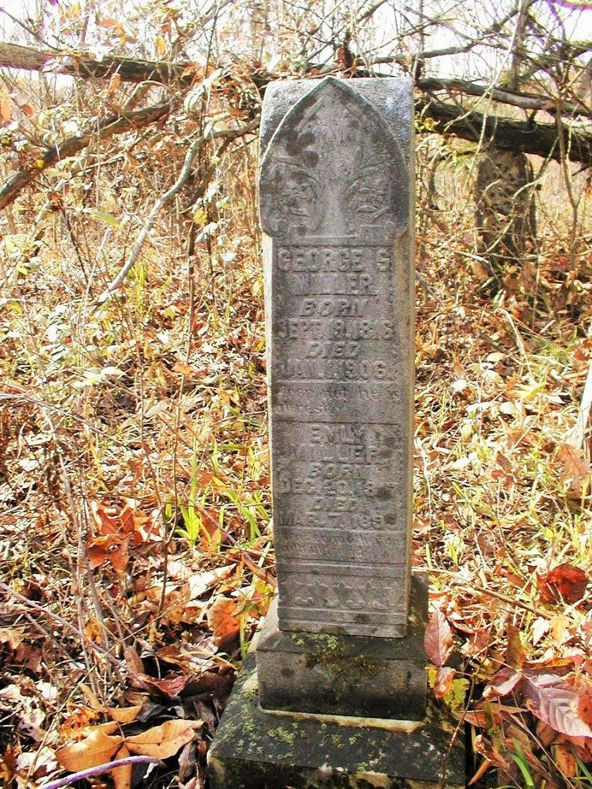

George Stewart Miller
19 September 1816 – 1 January 1906
Miller line · Kanawha County, Virginia (now West Virginia); Jackson County, West Virginia
Profile status: DOCUMENTED
Quick Facts
Born
19 September 1816, Virginia DOCUMENTED (the date is on the shared headstone in Miller Cemetery, Goldtown, read from the Find a Grave photograph; Virginia from the census consensus, 1850–1880)
Died
1 January 1906, Jackson County, West Virginia DOCUMENTED (shared headstone and the Jackson County Register of Deaths 1905, line 12, cause senile debility; the register gives age 92, the stone’s dates give 89 — both are carried)
Married
Emily Lane, 8 September 1834, Kanawha County, Virginia
DOCUMENTED (Kanawha County Register of Marriages, p. 58, minister A. B. Stroud; the record names only “George Miller” — no “Stewart”)
Occupation
Farmer (1850, 1860) and retail merchant (1870), Jackson County DOCUMENTED (1850 census: $1,500 in real estate; 1860 census; 1870 census, household 78)
Military
Confederate service SUPPORTED — 1st Sergeant, then Jr. 2d Lieutenant, Company D, 26th Virginia Infantry; entered 20 February 1862, promoted 13 May 1862 (about 33 Fold3 compiled-service-record images on FamilySearch). The service-record card gives no birth date or home county, so the link to this George rests on family sources — SUPPORTED, not DOCUMENTED. No Union service is attached.
Buried
Miller Cemetery, Goldtown, Jackson County, West Virginia SUPPORTED (Find a Grave memorial 45330100; 2 photos including the shared headstone, photographed 28 August 2019. The “George S. Miller Cemetery” name has no Find a Grave entry)
Religion
No church affiliation recorded in the research folder
Immediate Family
Parents
David Miller ×
Elizabeth Foster UNPROVEDTheir place as George’s parents is carried as the position in the research folder at UNPROVED — no primary record links George to David. Geni detached George’s parents on 27 September 2026; FamilySearch and Tricia’s tree still attach David × Elizabeth, and the Brewster Ancestry tree lists them as “Potential” only. An old compiled account’s “David Miller Jr. under immigrant David Sr.” is structurally contradicted — no record shows two David generations. The full conflicts are in Research Notes.
Spouse
Emily Lane (born 20 December 1817; died 7 March 1899), married 8 September 1834, Kanawha County, Virginia
DOCUMENTEDMarriage 8 September 1834, Kanawha County — the register names only “George Miller” and gives no parents for either spouse. Emily’s own parents are unproved; the four traditions for them are carried in Research Notes on her page.
Children
James Anderson Miller (born 27 June 1835; died 3 August 1835, in infancy)
UNPROVEDElizabeth L. Miller (born 2 August 1836; married James Crane 2 March 1854)
SUPPORTEDAmanda C. Miller (born about 1838; married D. Frank Garnes 9 November 1858)
SUPPORTEDSydna Ann Miller (born about July 1841; married George W. Shamblin 4 November 1858; died 11 September 1883)
SUPPORTEDBartlett F. Miller (born 21 September 1843; married Madline D. Casto 15 September 1867; died 25 February 1914)
SUPPORTEDCourtney F. Miller (born 15 January 1846; married John W. Wolf 24 March 1864; died 13 August 1895)
SUPPORTEDUnnamed infant (born and died 16 March 1848)
UNPROVEDLucinda Miller (born 22 March 1849; married Elijah Coleman 23 January 1870; died 27 January 1917; buried Miller Cemetery at Goldtown)
SUPPORTEDSpicer P. Miller (born 15 January 1852; married Lena J. Ritter 18 October 1871; died 1 December 1905)
SUPPORTEDArminta C. Miller (born 24 May 1854; married John Dewitt Clinton 12 April 1874; died 28 October 1889)
DOCUMENTEDJoseph Black Miller (born 27 March 1857; married Mary A. “Aunt Molly” Fisher 26 April 1877; died 11 July 1894)
SUPPORTEDRobert B. Miller (born 8 October 1859; died 21 May 1878)
DOCUMENTEDDavid H. Miller (born 9 June 1862; married Martha Ellen Goodwin 4 October 1880; died 21 October 1915)
SUPPORTEDSydna Ann is the direct line. Arminta’s birth (24 May 1854) and Robert B.’s birth (8 October 1859) are DOCUMENTED from the Jackson County birth index, p. 258 — the same page names Robert’s mother as “Sarah C.” instead of Emily, an anomaly carried in Research Notes. Joseph F. Miller (born 27 September 1860) and John F. Miller (born 18 November 1862) are Elihu Miller × Louisa’s sons, not this couple’s. The “Mirian” birth entry (born 28 March 1854, marked “Slave”, mother Emily) is a register anomaly, not a fourteenth child. Geni lists 12 children — 11 by Emily, plus Anderson by a second spouse, Leah, on Geni only — against the folder’s 13; Anderson is not carried here. The years printed for Amanda C. on Sydna’s live page are contradicted (she was born about 1838 and married D. Frank Garnes in 1858) and are not repeated here. Spicer’s wife is Lena vs Salina Ritter, unresolved; Sydna’s marriage is 4 November 1858 by the stone and license against 7 November 1858 in the pedigree, unresolved. No twins are indicated among the thirteen at the compiled level.
Siblings
Nancy Miller (born 1808), Joseph H. Miller (10 December 1810 – 4 October 1900; married (1) Rebecca Fisher 1833, (2) Vanila Kennison 1863, (3) Mary Spriegel 1867), Ruth Miller (born 1813; married Archibald Burdetter 1831; died 1834–1838), Rachel Miller (born 1820–1824; married James L. Milam 1838), David Alexander Miller (born 1820; died 1871), Mary “Polly” Miller (born 1827)
UNPROVEDGeorge’s brothers and sisters as carried in the compiled pedigree only — six, against five on Tricia’s tree (which adds Augustus and omits Ruth and Mary) and five more on FamilySearch as David’s children (Joseph Henry, Jane, Augustus, David Alexander, Virginia Jane). Neither roster is proved; the count conflict is flagged, not settled. Joseph H.’s son Elihu Miller (born 18 January 1834; married Louisa Eliza Carney 1856; died 12 April 1909 per Milam NOTE #1 — the 1906 reading appears to confuse him with George S. Miller, who died in 1906) is the father of Joseph F. and John F. Miller — the two boys sometimes misattached to this couple. David Alexander is NOT WikiTree Miller-428, a different man. None has a profile page yet, so no names are linked here.
On Family Tree Sites
Life Timeline
19 September 1816 · age 0
Born, Virginia DOCUMENTED (shared headstone; Virginia from the census consensus, 1850–1880)
8 September 1834 · age 17
Married Emily Lane, Kanawha County DOCUMENTED (register p. 58, minister A. B. Stroud; the record names only “George Miller”)
1850 · age 32
Census, Jackson County: farmer, $1,500 in real estate DOCUMENTED (image read)
1860 · age 44
Census, Jackson County: farmer DOCUMENTED (images read per the 2026-09-27 report)
20 February 1862 · age 45
Entered Confederate service, Company D, 26th Virginia Infantry, as 1st Sergeant SUPPORTED (Fold3 compiled-service-record images on FamilySearch; the card gives no birth date or home county)
13 May 1862 · age 45
Promoted Jr. 2d Lieutenant, by election of the men SUPPORTED
1870 · age 53
Census, Jackson County: retail merchant DOCUMENTED (1870 census, household 78)
1880 · age 62
Census, Jackson County DOCUMENTED (image-verified per the folder)
7 March 1899 · age 82
His wife Emily died, aged 81 DOCUMENTED (shared headstone + obituary transcription)
1900 · age 83
Census: widowed, living with his youngest son David Miller and family SUPPORTED
1 January 1906
Died, Jackson County DOCUMENTED (shared headstone + Jackson County Register of Deaths; cause senile debility; the register gives age 92, the stone’s dates give 89)
Burial
Miller Cemetery, Goldtown SUPPORTED (Find a Grave memorial 45330100)
Life Story
George Stewart Miller was born on 19 September 1816, in Virginia, and married Emily Lane on 8 September 1834 in Kanawha County, Virginia, when he was seventeen and she was sixteen. They settled in Jackson County, where the 1850 census finds him farming with $1,500 in real estate, and he was still farming in 1860; by 1870 he was keeping a store as a retail merchant. They had thirteen children, eleven of whom were raised. He was widowed when Emily died on 7 March 1899, and the 1900 census finds him, aged 83, living with his youngest son David Miller and David’s family. He died on 1 January 1906, and is buried with Emily in Miller Cemetery at Goldtown, under a shared stone that gives both their dates.
His middle name is not settled. No original record seen gives him a middle name — the records say only “George Miller” or “George S. Miller.” “Stewart” is the form carried on the Each Generation page; “Summer” is the compiled pedigree’s form; “Stuart” is the form on his daughter Sydna’s page. All three are guesses, and this page uses the Each Generation form, George Stewart Miller, with the conflict carried here.
He served in the Confederate army — the new find of this pass. About 33 compiled-service-record images on FamilySearch give “Miller, George S — 1 Sergeant | Jr. 2d Lieut, Co. D, 26 Virginia Infy (Confederate)”: he entered on 20 February 1862 as 1st Sergeant and was promoted Jr. 2d Lieutenant on 13 May 1862, by election of the men. The service-record card gives no birth date or home county, so the link to this George rests on family sources, and the service is carried as SUPPORTED, not DOCUMENTED. The earlier dig found no service because it checked Union West Virginia records only. No Union service is attached to him. An old compiled account says he served in the 11th West Virginia Cavalry — that service belongs to his son-in-law George W. Shamblin in that account’s telling, and is disproved even for him.
His parents are carried as David Miller × Elizabeth Foster, the position in the research folder, at UNPROVED — no primary record links George to David, and neither pair clears the bar for proof. Geni detached George’s parents on 27 September 2026; FamilySearch and Tricia’s tree still attach David × Elizabeth, and the Brewster Ancestry tree lists them as “Potential” only. An old compiled account’s version — a David Miller Jr. under an immigrant David Miller Sr. — is structurally contradicted, since no record shows two David generations. The immigrant story itself, David born before 1790 in Homburg, Germany, emigrating with his brother John, rests on the compiled pedigree and a 1988 local history, with no ship, manifest, or naturalization found — none of it is presented as David’s here. No portrait of George is placed on this page: the “George Summer Miller” tintype on the Milam pedigree is plausible, not proven, with no photographer, date, or inscription anywhere, and the identification is family tradition only.
Sources and Evidence
- Shared headstone, Miller Cemetery, Goldtown, Jackson County, West Virginia (Find a Grave photograph 191569147 by Ron Miller, 28 August 2019; memorial 45330100): “GEORGE S. MILLER BORN SEPT 19, 1816 DIED JAN 1, 1906; EMILY MILLER BORN DEC 20, 1817 DIED MAR 7, 1899” DOCUMENTED (stone inscription read from the photograph)
- Kanawha County Register of Marriages, p. 58 (West Virginia Culture, Film 521719, Image 207 — image re-read in the pull): “George Miller and Miss Emily Lane 8. [Sept. 1834]... Charleston 8th Sept. 1834. A B. Stroud - Minister of the Gospel” — no parents, no “Stewart” DOCUMENTED
- Jackson County Register of Deaths 1905, line 12 (West Virginia Culture, Film 1862398, Image 355 — image re-read): “Miller Geo.” died 1 Jan 1906 circled, cause “Senile debility”, age 92; the FamilySearch index year 1905 is an indexing error DOCUMENTED
- Jackson County birth index, p. 258 (West Virginia Culture, Film 567210, Image 370 — image re-read): Arminta born 24 May 1854, father G. S. Miller, mother “Emly” (handwritten); Robt. B. born Oct. 8, 1859, father G. S. Miller, mother “Sarah C.” — the Sarah C. anomaly stands DOCUMENTED (index image read)
- United States census 1850, Jackson County, Virginia (image read): George Miller 32, farmer, born Virginia, real estate $1,500; Emily 32; Elizabeth 13; Amanda 11; Sidney A. F. 8; Bartlett 6; Lucinda 2 DOCUMENTED
- United States census 1860, Jackson County, Virginia: Geo S. Miller 44; Emily 43; B F 16; C F 14; Lucinda 11; S P 8; Araminta 6; J B 3; R B 11 months DOCUMENTED (images read per the 2026-09-27 report)
- United States census 1870, Jackson County, West Virginia, household 78: George Miller 53, retail merchant, born Virginia; Emily 52; Spicer P. 18, blacksmith; Araminta 16; Joseph 13, farm laborer; Robert 10, farm laborer; David 8 DOCUMENTED
- United States census 1880, Jackson County, West Virginia, 27 July 1880 (image-verified per the folder): George 62; Emily 61; Spicer 28; Joseph 22; Robert 19; David 17 DOCUMENTED
- United States census 1840, Kanawha County, Virginia, p. 46 (NARA M704-566-0091 — image re-read in the pull): Geo Miller head; household tally not fully resolvable DOCUMENTED (image read; the tally is unresolved)
- United States census 1900, Jackson County, West Virginia: George 83, widowed, living with son David Miller and David’s family SUPPORTED (pedigree + folder agree)
- Fold3 compiled service record images, about 33, on FamilySearch (George S. Miller KGJ1-N1R, 36 memories): “Miller, George S — 1 Sergeant | Jr. 2d Lieut, Co. D, 26 Virginia Infy (Confederate)”; entered 20 February 1862; promoted 13 May 1862; Inspection Report of Wise’s Brigade, Johnson’s Division, Gen. Henry A. Wise, dated January 1865/1866 SUPPORTED (the card gives no birth date or home county — the identity link rests on family sources)
- Emily’s obituary (transcription only, reproduced in the Milam pedigree): 13 children born, 11 raised, 10 married; 165 descendants counted; sick since last December; joined the Baptist Church about 35 years before her death (about 1864); a poem follows, signed “J. E. Horn, Son-in-law” SUPPORTED (as obituary text; the original paper, date, and page have not been located)
- Milam pedigree, milaminvirginia.com/miller-pedigree/ (read directly 7 November 2026): David Miller (born before 1790, Homburg, Germany; married Elizabeth Foster 11 August 1807, Monroe County); George “Summer” Miller married Emily Lane (daughter of Laurens Lane × Elizabeth Barnhart) 8 September 1834, Kanawha; Emily born 20 December 1817, died 7 March 1899; the 13-child roster with exact dates; Joseph Black Miller’s descendants; a photograph captioned “George Summer Miller” SUPPORTED (compiled family history — usable as a lead, never as proof)
- Monroe County marriage transcription (independent of the pedigree): David Miller × Betsey Foster, 11 August 1807 DOCUMENTED (as a marriage; it does not prove they were George’s parents)
- Geni profiles, read live 7 November 2026: George S. Miller 6000000020352655119 (born about 1816, Virginia; died 1 January 1906, Jackson, West Virginia; no parents attached; spouses Emily Lane and Leah 6000000035401246065; 12 children, including Anderson by Leah); Emily Miller (Lane) 6000000020352655139 (born about 1817, Mason, West Virginia; died 7 March 1899; parents still attached: Lawrence Lane 6000000154928694839 × Eleanor “Nell” Lane 6000000025441575652, detach-pending flag still there); David Miller Jr. 6000000020352918842 (1785–1833) × Elizabeth (Foster) Miller 6000000030143836265; the children are attached on Geni (Amanda, Sydna, Bartlett, Courtney, Lucinda, Spicer, Armenta, Joseph B., Robert B., Elizabeth, David H.) SUPPORTED (compiled; Geni detached George’s parents 27 September 2026)
- FamilySearch, read live 7 November 2026: George Stewart Miller KGJ1-N1R (born 19 September 1816; died 1 January 1906; burial Goldtown; parents attached: David B Miller GS4Z-H59, 1787–1833, × Elizabeth Foster 9WRP-B6W, 1784–1839; spouse Emily Lane KGVM-J5Z; 12 children, including two confused Arminta entries, Mirian MLVG-1XQ and Arametta L7JG-L59; 36 memories; military fact Civil War Confederate, 0 sources on the fact); Emily KGVM-J5Z (born 20 December 1817; died 7 March 1889 — year wrong; parents attached: Lawrence Lane LZFQ-PF3, 1777–1835, × Nancy Elizabeth Fleming GHTL-27N, 1777–1822) SUPPORTED
- WikiTree, read live 7 November 2026: George Stewart Miller Miller-128475 (1816–1906; no parents; no sources); Emily (Lane) Miller Lane-24036 (1817–1889 — year wrong; no parents; no sources); David Miller Miller-441 (1785–1833, Hamburg; married Elizabeth Foster 11 August 1807, Monroe) × Elizabeth (Foster) Miller Foster-119; Lawrence Lane Lane-5653 (born 5 April 1777; died 1860, Illinois; married Eleanor Smith 1825; Emily NOT his child) × Eleanor (Smith) Lane Smith-44138 (about 1788; died before May 1849; widow of Samuel M. Jackson, married 2 January 1803); Lawrence Lane (son, born 1822) Lane-15260 × Elizabeth (Barnhart) Lane Barnhart-1756 (married 23 May 1849) SUPPORTED
- Find a Grave, read live 7 November 2026: George S. Miller memorial 45330100 (born 1816; died 1 January 1906; Miller Cemetery, Goldtown; 2 photos, including headstone 191569147 by Ron Miller, 28 August 2019); Emily memorial 45330138 (born 20 December 1817; died 1889 — year wrong; 3 photos); Miller Cemetery 2132676 (52 memorials); no Find a Grave entry for “George S. Miller Cemetery” (genuine negative); Geni’s burial places contradicted — Emily is in Miller Cemetery, not Fisher Cemetery SUPPORTED
- Ancestry, Brewster Family Tree (tree 212654536), read live 7 November 2026: George S. Miller 162810166268 (born 19 September 1816; death Unknown, no death fact; parents only “Potential”: David “Davy” Miller, Elizabeth “Betsy” Foster; no sources); Emily Lane 162810166628 (born about 1818; died 7 March 1899; no parents; no sources); child Sydna Ann Miller 162810160436 SUPPORTED
- MyHeritage, Brewster Site (FTDNA), read live 7 November 2026: George S. Miller 1500021; Emily Miller 1500022; no birth or parent facts on either; only child Sydna Ann Miller (born 29 June 1841, Jackson, West Virginia); no sources on either; Consistency Checker detail is Premium/paywalled — not opened SUPPORTED
- Tricia’s Ancestry tree (tree 44342901), read signed in 7 November 2026: George 6189638521 (born 1816; died 1903, Jackson, West Virginia — wrong; the headstone and death register say 1 January 1906; 6 sources, including 4 census images paywalled, not opened); Emily 6189638522 (name “Emily” only; no birth, no death; no sources; parents unknown); 18 in-scope profiles read + 2 parents for context; media yield ZERO — all 18 Galleries empty SUPPORTED (harvest; no media was filed — none is attached to any in-scope profile)
- Findmypast, checked signed in 7 November 2026: George Miller — 5 locked trees, 448 record hits; details trial-locked, not opened; Emily Lane — 22 record hits, none ours (genuine negative); no tile SUPPORTED
- Rootsweb “Descendants of William Lane” (Roberta Lewis, 2007), Wayback capture 16 January 2025: a Tennessee/Indiana family (William born 17 December 1778, Virginia; died 1845, Grainger County, Tennessee); its Emily Lane, born about 1835, is the daughter of Lewis Lane × Emma Jackson; its 5 August 1811 birth is Elizabeth Lane — neither is our Emily (born 1817, married 1834, Kanawha) SUPPORTED (CONTRADICTED as a source for our Emily)
- Books hunted, not located: Sissonville: A Time to Remember (1988 — the sole source for the Homburg, Germany origin); Carder 1997; the 1996 Jackson County family-history book — physical copies only; no free online copy found SUPPORTED (not located; if they cost money, a Books & Sources note only)
Grades: DOCUMENTED an original record says it · SUPPORTED several records point to it · FAMILY ACCOUNT the family’s own telling · UNPROVED a lead, not proved.
Research Notes and Open Questions
- Grades on this page: DOCUMENTED means an original record was read; SUPPORTED means a claim attested by filed research — the census images, the death-register image, the marriage-register image, the shared headstone photograph, the signed-in tree checks — but not by an original record read here; UNPROVED means a claim carried from the research folder with no corroboration found.
- Middle name, three-way conflict, no side adopted: the records say only “George Miller” or “George S. Miller.” “Stewart” is the form carried on the Each Generation page; “Summer” is the compiled pedigree’s form; “Stuart” is the form on his daughter Sydna’s page. This page uses the Each Generation form, George Stewart Miller.
- Parentage: David Miller × Elizabeth Foster are George’s parents as carried in the research folder, at UNPROVED — no primary record links George to David. Geni detached George’s parents on 27 September 2026; FamilySearch and Tricia’s tree still attach David × Elizabeth, and the Brewster Ancestry tree lists them as “Potential” only. An old compiled account’s “David Miller Jr. under immigrant David Sr.” is structurally contradicted — the pedigree makes the immigrant David himself the father, and no record shows two David generations. The immigrant story (David born before 1790 in Homburg, Germany; emigrated with his brother John; Monroe County to Nicholas County about 1820 to Kanawha County) rests on the compiled pedigree and the 1988 local history Sissonville: A Time to Remember, with no ship, manifest, or naturalization found — none of it is presented as David’s here. Elizabeth Foster’s parents, Nimrod Foster × Elizabeth Winnefred Brown, are pedigree-only. David’s death, “circa 1855” in the pedigree, is unsupported — no David Miller death record was found in Kanawha County, 1852–1858.
- Confederate service, SUPPORTED not DOCUMENTED: about 33 Fold3 compiled-service-record images on FamilySearch give “Miller, George S — 1 Sergeant | Jr. 2d Lieut, Co. D, 26 Virginia Infy (Confederate)”, entered 20 February 1862, promoted 13 May 1862. The service-record card gives no birth date or home county, so the identity link to this George rests on family sources. The earlier dig found no service because it checked Union West Virginia records only. No Union service is attached to George. An old compiled account says he served in the 11th West Virginia Cavalry — that service belongs to his son-in-law George W. Shamblin in that account’s telling, and is disproved even for him.
- Death age: the Jackson County death register gives age 92; the shared stone’s dates (born 19 September 1816, died 1 January 1906) give 89. The FamilySearch index year 1905 for the death is an indexing error — the register row is headed 1905 and the 1 January 1906 date is circled on it.
- Geni second spouse: Geni lists a second spouse, Leah (6000000035401246065), and 12 children, including Anderson by Leah. No marriage record for a Leah has been found, and no second marriage is carried on this page. Geni’s 12 children (11 by Emily, plus Anderson by Leah) stand against the folder’s 13 — James Anderson (died in infancy, 1835) and the unnamed infant (1848) are on no Geni profile.
- Child roster: thirteen carried. Joseph F. Miller (born 27 September 1860) and John F. Miller (born 18 November 1862) are Elihu Miller × Louisa’s sons, not this couple’s — do not re-attach them. The “Mirian” birth entry (born 28 March 1854, marked “Slave”, mother Emily) is a register anomaly, not a fourteenth child. Robert B. Miller’s mother is “Sarah C.” in the Jackson County birth index, p. 258 — the same page that names Emily as Arminta’s mother — against Emily everywhere else; the index image was re-read and the anomaly stands, unresolved. The years printed for Amanda C. on Sydna’s live page are contradicted (she was born about 1838 and married D. Frank Garnes in 1858) and are not repeated here. Spicer’s wife is Lena vs Salina Ritter, unresolved. Sydna’s marriage is 4 November 1858 by the stone and license against 7 November 1858 in the pedigree, unresolved. Arminta’s name and dates are tangled on FamilySearch (two entries, plus the separate Mirian entry); the register gives Arminta, 24 May 1854. Robert B.’s birth is 8 October 1859 by the register image; Milam’s 15 September 1859 is contradicted. Mary A. “Aunt Molly” Fisher’s birth is 27 August 1858 per the Molly Slater obituary on Milam; the pedigree’s 27 August 1860 is contradicted.
- No portrait of George is placed on this page. The “George Summer Miller” tintype on the Milam pedigree is PLAUSIBLE, not proven: the full couple tintype (man in slouch hat, lower left; woman with wide-brimmed hat, upper right) and the man-only 200×203 crop are the same image as the Drive file george-summer-miller.jpg in the Sydna couple folder’s Pictures, and the same solo portrait is carried on FamilySearch (JeanHorn1, file “emily lane george stewart.jpg”) and Find a Grave. No photographer, date, or inscription exists anywhere, and the identification is family tradition only. The tintype era (1860s–1880s) fits George aged 43–63, and the white-beard solo portrait fits George at about 80–89 — but fit is not proof.
- Siblings: six on the compiled pedigree, all UNPROVED, against five on Tricia’s tree (which adds Augustus and omits Ruth and Mary) and five more on FamilySearch as David’s children (Joseph Henry, Jane, Augustus, David Alexander, Virginia Jane). David Alexander is NOT WikiTree Miller-428, a different man. A David Miller served in Company J, 7th West Virginia Cavalry (Captain Richard H. Lee’s 1864 company return) — which David is not established (David Alexander, born 1820, is the age-fit candidate); it is NOT George.
- Namesakes — do NOT merge: the OTHER George Shamblin × Sydna Miller (married 3 December 1867; George born 6 April 1835, died 22 April 1899; Sydna born 18 July 1847, died 17 January 1925) is a later namesake couple with the same names — none of its dates, children, or Civil War notes belongs to this couple. The 1899 Kanawha will of a George S. Miller (son George P. Miller; daughter Amanda C. under 21) is a DIFFERENT George — ours was alive in 1899 and his Amanda was born about 1838. “George S. Miller Cemetery” has no Find a Grave entry (genuine negative). George Summer Cunningham (father of Icie Erdine Cunningham) is a different “George Summer”.
- Tricia’s Ancestry harvest, signed in 7 November 2026: 18 in-scope profiles read (George, Emily, 11 children, 5 siblings) plus the parents for context — 20 profile IDs recorded. Media yield ZERO — all 18 Galleries empty; no photos or documents were harvested; nothing was filed to Pictures. Ruth Miller, Mary Miller, and James Anderson Miller are not on Tricia’s tree (genuine negatives).
- Open: Emily’s original obituary (paper, date, page) — the J. E. Horn “son-in-law” signature can only be tested against the original; the Sarah C. mother anomaly for Robert B.; Sissonville: A Time to Remember (1988), Carder 1997, and the 1996 Jackson County family-history book (physical copies only); the 1830 Kanawha census for Lane/Layne household heads (NARA M19-192, not read page by page — the 1830 Lawrence Lane head found is in Mason County, p. 152, not Kanawha); the 1820 Nicholas County census, p. 204 (three Miller heads including “Miller Sen^r”, given names not legible).
- Tree checks, signed in 7 November 2026: Geni (George 6000000020352655119; Emily 6000000020352655139); FamilySearch (KGJ1-N1R; KGVM-J5Z); WikiTree (Miller-128475; Lane-24036); Ancestry Brewster tree (162810166268; 162810166628); Ancestry Tricia’s tree (6189638521; 6189638522); Find a Grave (45330100; 45330138); Findmypast (George: 5 locked trees, 448 record hits, trial-locked; Emily: 22 hits, none ours); MyHeritage (1500021; 1500022).